Contents
Fusion Reactor Design demo
Reproduce the figures/tables from the original reference paper. Each time you call the function you specify the mode, which is the dependent variable that you're interested in. ------------------------------------------------------------------------ Reference: Freidberg, Mangiarotti, and Minervini, "Designing a tokamak fusion reactor--How does plasma physics fit in?" Physics of Plasmas 22, 070901 (2015). ------------------------------------------------------------------------ See also FusionReactorDesign ------------------------------------------------------------------------
%-------------------------------------------------------------------------- % Copyright (c) 2022 Princeton Satellite Systems, Inc. % All rights reserved. Since version 2022.1 %--------------------------------------------------------------------------
Set up input data structures for each variable sweep (a,H,B_max,P_E,P_W)
% Data structure for the case that the input variable is the plasma minor % radius, a. Note that the default data structure does not need to be % altered in this case, since the default data was chosen to reproduce % the first results figure, Figure 5, in the reference. d_a = FusionReactorDesign; % Compute plots ("curves") and tables ("parameters") from the reference d_a = FusionReactorDesign(d_a,'a'); % Data structure for the case that the input variable is the H-mode % enhancement factor, H d_H = FusionReactorDesign; d_H.B_max = 13; d_H.H = 1.26; d_H.P_E = 1000; % electric power output [MW] d_H.P_W = 4; % max neutron wall loading [MW/m2] d_H.a = 1.26; % Compute plots and table from the reference d_H = FusionReactorDesign(d_H,'H'); % Data structure for the case that the input variable is the maximum % magnetic field at the coil, B_max. d_Bmax = FusionReactorDesign; d_Bmax.B_max = 17.6; d_Bmax.H = 1; d_Bmax.P_E = 1000; % electric power output [MW] d_Bmax.P_W = 4; % max neutron wall loading [MW/m2] d_Bmax.a = 0.97; % We will also specify the minimum, maximum, and length of the input vector % in this case. pmin = 10; pmax = 25; n = 100; % Compute plots and table from the reference d_Bmax = FusionReactorDesign(d_Bmax,'B_max',pmin,pmax,n); % Data structure for the case that the input variable is the electric power % output, P_E d_PE = FusionReactorDesign; d_PE.B_max = 13; d_PE.H = 1; d_PE.P_E = 1554; % electric power output [MW] d_PE.P_W = 4; % max neutron wall loading [MW/m2] d_PE.a = 1.44; % Compute plots and table from the reference d_PE = FusionReactorDesign(d_PE,'P_E'); % Data structure for the case that the input variable is maximum input wall % loading, P_W d_PW = FusionReactorDesign; d_PW.B_max = 13; d_PW.H = 1; d_PW.P_E = 1000; % electric power output [MW] d_PW.P_W = 2.1; % max neutron wall loading [MW/m2] d_PW.a = 1.35; % Compute plots and table from the reference d_PW = FusionReactorDesign(d_PW,'P_W'); % Display output tables (these correspond to the various columns, in order, % in Table III of the reference) disp(d_a.parameters) disp(d_H.parameters) disp(d_Bmax.parameters) disp(d_PE.parameters) disp(d_PW.parameters) %-------------------------------------- % $Id: 0c42080762886b3751bf661818ff650348f32380 $
Quantity Output
_________________ _______
{'Bmax(T)' } 13
{'H' } 1
{'PE(MW)' } 1000
{'PW(MW/m^2)' } 4
{'VI/PW(m^3/MW)'} 1.0155
{'Q||(MW-T/m)' } 498.85
{'B0(T)' } 6.8768
{'a(m)' } 1.34
{'c(m)' } 0.97045
{'R0(m)' } 5.3849
{'R0/a' } 4.0186
{'p(atm)' } 7.5459
{'n(10^20 m^-3)'} 1.4203
{'n/nG' } 0.5604
{'tauE(s)' } 0.94747
{'I(MA)' } 14.219
{'beta(%)' } 4.0635
{'beta/betaT' } 0.93794
{'qstar' } 1.5598
{'qK/qstar' } 1.2822
{'fB' } 0.83916
{'fB/fNC' } 1.8927
Quantity Output
_________________ _______
{'Bmax(T)' } 13
{'H' } 1.26
{'PE(MW)' } 1000
{'PW(MW/m^2)' } 4
{'VI/PW(m^3/MW)'} 1.0845
{'Q||(MW-T/m)' } 506.2
{'B0(T)' } 7.4045
{'a(m)' } 1.26
{'c(m)' } 0.98031
{'R0(m)' } 5.7139
{'R0/a' } 4.5349
{'p(atm)' } 7.7731
{'n(10^20 m^-3)'} 1.463
{'n/nG' } 0.72878
{'tauE(s)' } 0.91978
{'I(MA)' } 10.003
{'beta(%)' } 3.6104
{'beta/betaT' } 1.202
{'qstar' } 1.9982
{'qK/qstar' } 1.0009
{'fB' } 0.77237
{'fB/fNC' } 1
Quantity Output
_________________ _______
{'Bmax(T)' } 17.6
{'H' } 1
{'PE(MW)' } 1000
{'PW(MW/m^2)' } 4
{'VI/PW(m^3/MW)'} 1.8877
{'Q||(MW-T/m)' } 654.47
{'B0(T)' } 12.442
{'a(m)' } 0.97
{'c(m)' } 1.6387
{'R0(m)' } 7.4262
{'R0/a' } 7.6559
{'p(atm)' } 8.8615
{'n(10^20 m^-3)'} 1.6679
{'n/nG' } 0.64247
{'tauE(s)' } 0.8068
{'I(MA)' } 7.6584
{'beta(%)' } 1.4577
{'beta/betaT' } 0.8196
{'qstar' } 1.9978
{'qK/qstar' } 1.0011
{'fB' } 0.6843
{'fB/fNC' } 1
Quantity Output
_________________ _______
{'Bmax(T)' } 13
{'H' } 1
{'PE(MW)' } 1554
{'PW(MW/m^2)' } 4
{'VI/PW(m^3/MW)'} 1.1785
{'Q||(MW-T/m)' } 668.51
{'B0(T)' } 8.5718
{'a(m)' } 1.44
{'c(m)' } 1.0666
{'R0(m)' } 7.7407
{'R0/a' } 5.3755
{'p(atm)' } 7.2776
{'n(10^20 m^-3)'} 1.3698
{'n/nG' } 0.7971
{'tauE(s)' } 0.9824
{'I(MA)' } 11.144
{'beta(%)' } 2.5223
{'beta/betaT' } 0.99552
{'qstar' } 1.9948
{'qK/qstar' } 1.0026
{'fB' } 0.69587
{'fB/fNC' } 1
Quantity Output
_________________ _______
{'Bmax(T)' } 13
{'H' } 1
{'PE(MW)' } 1000
{'PW(MW/m^2)' } 2.1
{'VI/PW(m^3/MW)'} 2.5987
{'Q||(MW-T/m)' } 373.58
{'B0(T)' } 9.7459
{'a(m)' } 1.35
{'c(m)' } 1.1202
{'R0(m)' } 10.191
{'R0/a' } 7.5487
{'p(atm)' } 5.4263
{'n(10^20 m^-3)'} 1.0213
{'n/nG' } 0.68694
{'tauE(s)' } 1.3176
{'I(MA)' } 8.524
{'beta(%)' } 1.4548
{'beta/betaT' } 0.80252
{'qstar' } 1.9912
{'qK/qstar' } 1.0044
{'fB' } 0.66258
{'fB/fNC' } 1
 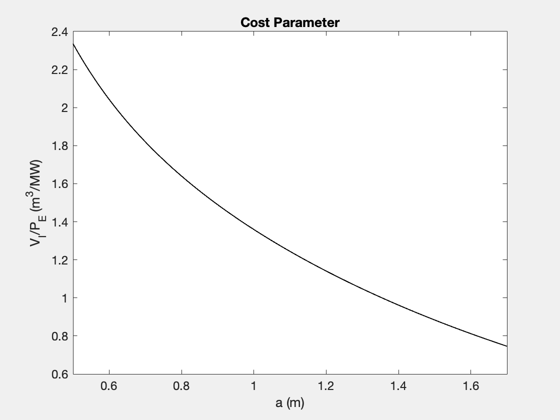 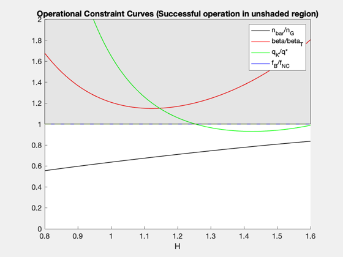 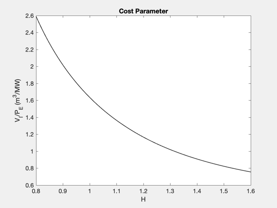 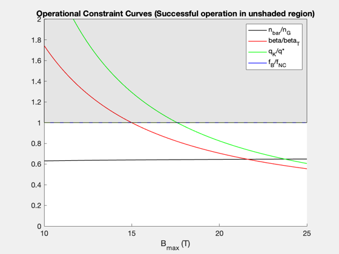 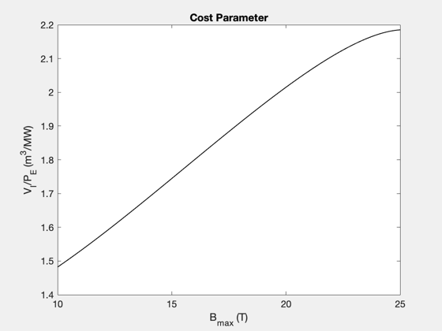 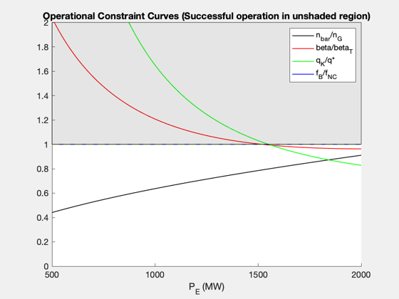 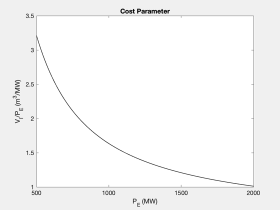 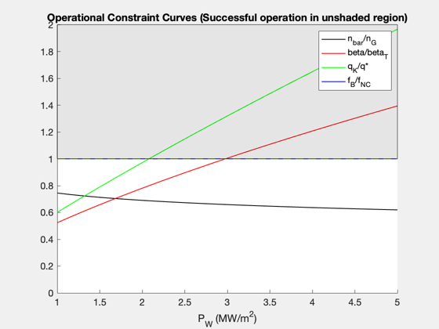 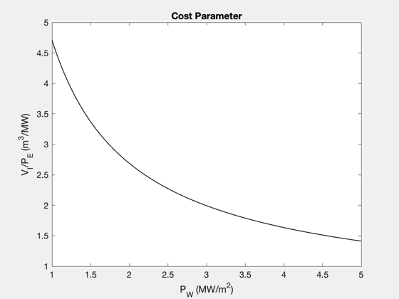
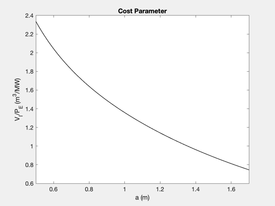 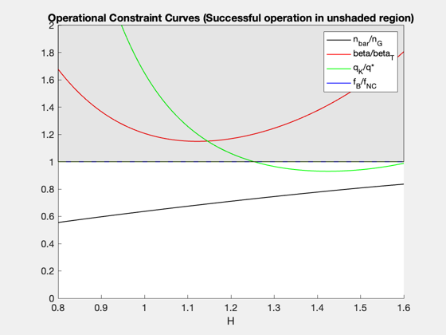 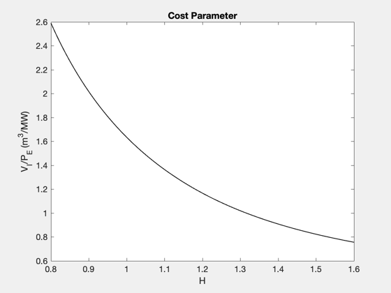 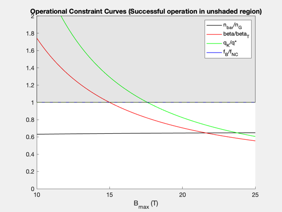 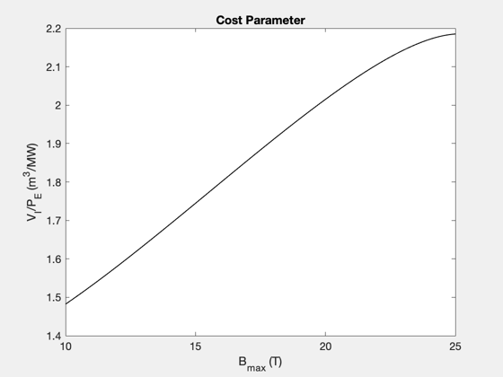 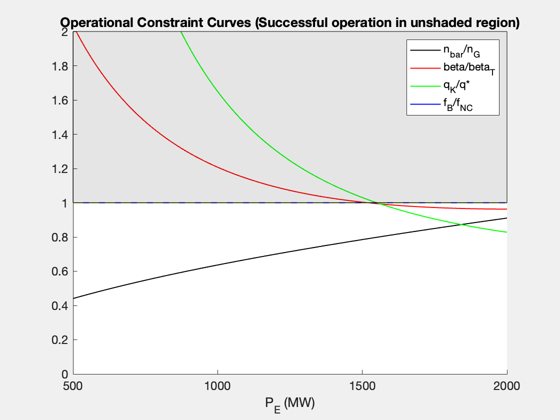 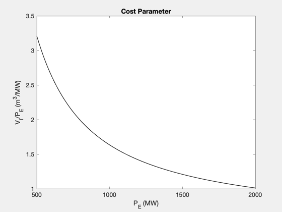 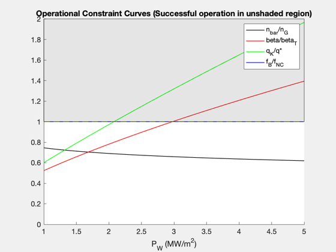 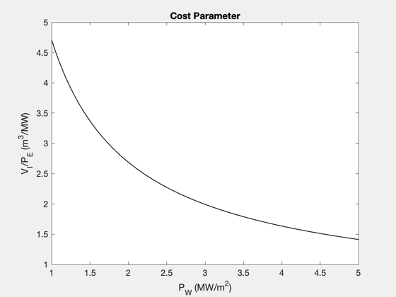